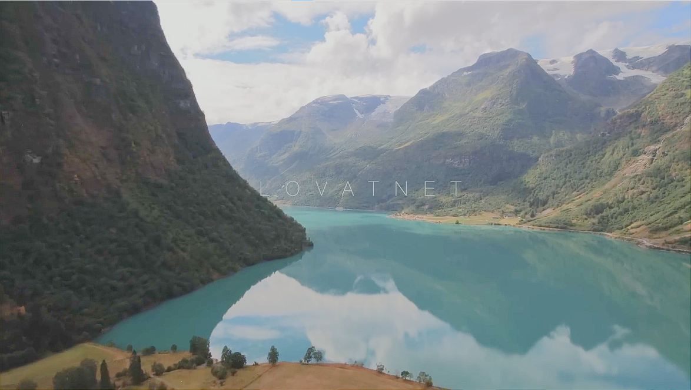

Проте добре спроєктовані будівлі є не лише в Осло. Наприклад, церкви в інших регіонах також дивують своїм дизайном. Як приклад, церква в Кнарвіку. Здається, справжній божественний задум, чи не так? До речі, важко було б здогадатися, що це церква, якби не хрест.
Серед сучасних трендів столиці особливої уваги заслуговують плаваючі сауни. Це унікальний досвід: перебувати в теплій сауні, милуватися краєвидами міста та мати змогу одразу пірнути у воду. Фіорд, який є частиною притоки Північного моря, забезпечує солону й прохолодну воду, що додає особливих вражень. Ця традиція зародилася всього 10 років тому, коли місцевий житель побудував першу плавучу сауну. Ідея швидко набрала популярності серед місцевих, і тепер такі сауни є невід'ємною частиною життя Осло. Кажуть, є навіть люди, які відвідують їх щодня, щоб зарядитися енергією перед роботою. Наступного разу, коли будете в Осло, обов’язково спробуйте цю чудову традицію!
Похід у гори — це обов'язковий досвід для кожного, хто відвідує Норвегію. Ця країна пропонує мальовничі маршрути на будь-який смак і вік. Один із таких маршрутів, прокладений непальськими шерпами, запрошеними урядом Норвегії, веде до неймовірної вершини над Люсіфіордом. Підйом займає близько двох годин, але варто бути готовими до природних викликів, як-от сильний вітер. Одним із найвідоміших місць є Прейкестулен — гігантська скеля розміром 25 на 25 метрів, що височіє на 600 метрів над Лисефьордом. Види тут справді захоплюють дух, і це місце стало справжнім символом Норвегії, який дозволяє повною мірою відчути велич фіордів.
Однією з цікавих туристичних визначних пам'яток Норвегії є Мальовничі маршрути. Це 18 спеціально позначених автомобільних доріг, які дозволяють дослідити найкрасивіші куточки країни. Маршрути простягаються більш ніж на 2000 км, відкриваючи приголомшливі краєвиди Північної та Центральної Норвегії. Під час подорожі можна побачити каньйони, льодовики, річки з кришталево чистою водою та величні фіорди. Особливості ландшафту Норвегії ускладнюють розвиток інфраструктури, адже глибокі фіорди роблять будівництво мостів і доріг справжнім викликом. Деякі фіорди сягають понад 500 метрів у глибину, тому багато мостів у Норвегії є підвісними й досягають довжини понад 1 км. Гірські перевали також є важкими для будівництва через складні умови та сильні снігопади, тому норвежці винайшли унікальні рішення, щоб подолати ці природні перепони.
Норвегію по праву можна назвати Королівством тунелів. У країні, населення якої становить близько 5 мільйонів людей, налічується близько 1240 тунелів — це рекордний показник. Тунелі тут зустрічаються майже всюди, і їх кількість вражає, особливо якщо врахувати наявність мега-довгих тунелів. Найдовший у світі тунель — Лердальський тунель (Lerdalstunnelen) — також знаходиться в Норвегії. Його довжина сягає 24 км, а дизайн був розроблений у співпраці з психологами. У тунелі облаштовані зони відпочинку та багатокольорове освітлення, яке допомагає водіям залишатися зосередженими. Цікаво, що тут навіть є кільцеві розв'язки — унікальна особливість, якої не зустрінеш більше ніде.
Озеро Ловатнет — справжній природний шедевр. Його неймовірно бірюзовий колір створюється завдяки льодовиковій воді, яка тане і наповнює озеро. Навколо нього розташовані численні водоспади, серед яких особливо виділяється Рамнеф'єльфоссен. За різними джерелами, його висота становить від 600 до 800 метрів, що робить його одним із найбільших водоспадів у світі.
